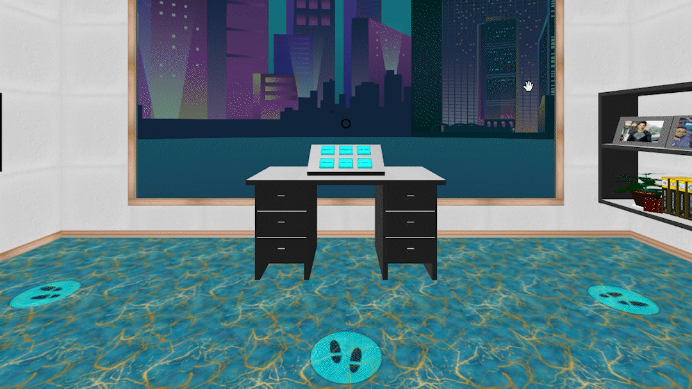
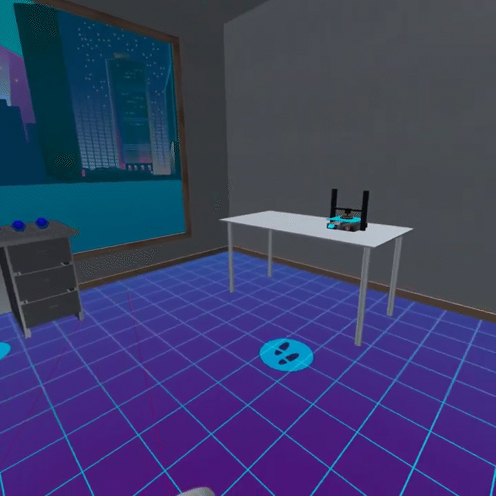

Bienvenue dans le monde VR de Renaskia
Apprendre, renaître, avancer.
Pour vivre une expérience optimale, merci d'utiliser un casque de réalité virtuelle de type Meta Quest, HTC Vive, Pico, etc.
Il est cependant tout à fait possible de tester le site VR de Renaskia avec votre ordinateur. Pour cela, déplacez le curseur au milieu de l'écran et cliquez avec le bouton gauche de votre souris. Vous pourrez ainsi utiliser les socles de téléportation et actionner les différents éléments avec lesquels vous pouvez interagir.
N'hésitez pas à nous écrire à contact@renaskia.fr pour nous faire part de vos appréciations sur votre expérience VR Renaskia. Le bouton de contact est accessible un peu plus bas dans la page.
Avec le curseur et la souris

Avec votre casque de réalité virtuelle
